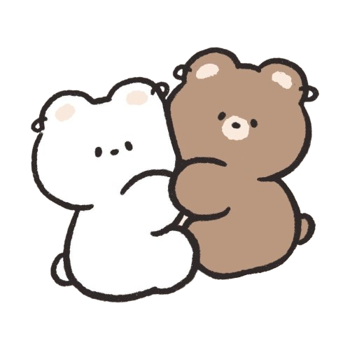

for Viswanath
I made you a tiny postcard — flip it ↓
(handwritten, silly, and honest)
tap to flip
psst—open me again later
i love you.
i miss you in small, ordinary moments — the stove clicking on, the quiet after a laugh, the walk from the door to the sofa. you’ve made my days feel a little warmer.
if feelings could doodle, they’d draw us as two bears who keep finding each other no matter how many pages the world flips.
this is me waving from my side of the day: hi, silly human. you’re my favorite person — in lowercase, handwritten, and always.
flip back